LiveClawBench: Benchmarking LLM Agents on Complex, Real-World Assistant Tasks
LiveClawBench：复杂真实助理任务基准
22 个全栈 mock 服务构成复杂助理任务，17 个模型对比（Qwen/DeepSeek/Kimi/MiniMax/GLM/Claude/GPT 等）。
翻译范围：正文全部段落走三步精翻（直译→反思→雅化）；脚注与参考文献不译；公式、数字、模型名、数据集名、引用标记按原文 Unicode 保真；表格还原为可复制文本。
AI Model TF March, 2026AI Model TF 2026年3月
LiveClawBench: Benchmarking LLM Agents on Complex,
LiveClawBench：面向复杂真实世界
Real-World Assistant Tasks助理任务的 LLM 智能体评测
Xiang Long1†, Li Du1†, Yilong Xu2,1†, RongJian Xu3, Qiyanhui Lu3
Xiang Long1†, Li Du1†, Yilong Xu2,1†, RongJian Xu3, Qiyanhui Lu3
Ying Gao3, Qinhua Xie3, Fangcheng Liu1, Ning Ding1, Haoqing Wang1
Ying Gao3, Qinhua Xie3, Fangcheng Liu1, Ning Ding1, Haoqing Wang1
Ziheng Li4,1, Changjiang Zhou1, Jianyuan Guo3, and Yehui Tang1B
Ziheng Li4,1, Changjiang Zhou1, Jianyuan Guo3, and Yehui Tang1B
1Samsung Research, Beijing, China 2HKUST (Guangzhou) 3City University of Hong Kong 4Peking University
1三星研究院（中国北京） 2香港科技大学（广州） 3香港城市大学 4北京大学
{xiang.long, li0209.du, yehui.tang}@samsung.com{xiang.long, li0209.du, yehui.tang}@samsung.com
yiloxuu@gmail.comyiloxuu@gmail.com
arXiv:2604.13072v2 [cs.CL] 25 Jun 2026arXiv:2604.13072v2 [cs.CL] 25 Jun 2026
Abstract摘要
OpenClaw-style personal assistants extend LLM agents from isolated tool use to open-ended, stateful, and personalized software environments. Eval- uating these assistants is fundamentally a fidelity problem: benchmarks must be faithful both to the distribution of real assistant tasks and to the execution semantics of the environments in which those tasks unfold. Ex- isting benchmarks often lose fidelity in one dimension or the other. Their task distributions are shaped by what is easy to isolate, mock, and verify, underrepresenting real-world difficulties such as cross-service dependency, contaminated state, implicit intent, and runtime change. Their environ- ments are either live but hard to reproduce, or reproducible but reduced to endpoint-level stubs that remove sessions, artifacts, state transitions, and downstream side effects. We introduce LiveClawBench, a benchmark de- signed around this dual-fidelity requirement. LiveClawBench combines a Triple-Axis Complexity Framework for difficulty-driven task construction with
OpenClaw 风格的个人助理将 LLM 智能体从孤立的工具调用扩展到开放、有状态且个性化的软件环境。评估这类助理本质上是一个保真度问题：基准既要忠实于真实助理任务的分布，也要忠实于任务赖以展开的环境的执行语义。现有基准往往在其中一端损失保真度：其任务分布取决于哪些任务易于隔离、模拟与验证，从而系统性低估跨服务依赖、状态污染、隐式意图和运行时变更等真实困难；其环境要么真实但难以复现，要么可复现却被简化为端点级桩，丢失了会话、工件、状态迁移与下游副作用。为此，我们提出围绕这一双重保真度要求设计的 LiveClawBench：它将难度驱动的任务构建三轴复杂度框架与
reproducible full-stack mock applications that preserve stateful execution semantics. With 134 executable cases across 10 domains with 22 mocked services, LiveClawBench supports controlled, extensible, and factor-level diagnostic evaluation of realistic agentic tasks. We release the benchmark resources1.
保留有状态执行语义的可复现全栈模拟应用。LiveClawBench 包含覆盖 10 个领域、22 个模拟服务的 134 个可执行案例，支持对现实智能体任务进行受控、可扩展且可因子级诊断的评估。基准资源已公开发布1。
1Introduction1 引言
LLMs are increasingly moving beyond text generation toward agents that can plan, use tools, and operate in software environments Brown et al. (2020); Wei et al. (2022); Yao et al. (2023); Schick et al. (2023). OpenClaw-style assistants bring this capability to users’ everyday digital workspaces, from browsers and file systems to code repositories and personalized memory OpenClaw (2025); Park et al. (2023); Shinn et al. (2023); Wang et al. (2023; 2026); Xu et al. (2026). This shift makes evaluation difficult because real-world assistant tasks are defined not only by user instructions, but also by how those instructions unfold in stateful software environments. A simple request such as “resolve a travel disruption” or “repair my development environment” may require cross-service coordination, implicit goal
LLM 正日益超越单纯的文本生成，演化为能够规划、使用工具并在软件环境中运行的智能体 Brown et al. (2020); Wei et al. (2022); Yao et al. (2023); Schick et al. (2023)。OpenClaw 风格的助理把这一能力带入用户日常的数字工作区——从浏览器、文件系统到代码仓库和个性化记忆 OpenClaw (2025); Park et al. (2023); Shinn et al. (2023); Wang et al. (2023; 2026); Xu et al. (2026)。这一转变使评估变得困难：真实世界的助理任务不仅由用户指令定义，还取决于这些指令如何在有状态的软件环境中展开。诸如“解决行程中断”或“修复我的开发环境”这样简单的请求，可能需要跨服务协调与隐式目标
inference, personal context, persistent artifact updates, and adaptation to runtime changes. Faithful evaluation must therefore capture both the distribution of real assistant tasks and the execution semantics of the environments in which they are carried out.
推断、个人上下文、持久化的工件更新以及对运行时变化的适应。因此，忠实的评估必须同时刻画真实助理任务的分布，以及承载这些任务的环境的执行语义。
1Resources: (1) Benchmark: https://github.com/Mosi-AI/LiveClawBench; (2) Leaderboard: https://mosi-ai.github.io/LiveClawBench/leaderboard/; (3) Trajectories: https://huggingface.co/datasets/Mosi-AI/LiveClawbench-trajectories.
1资源：(1) 基准：https://github.com/Mosi-AI/LiveClawBench; (2) 排行榜：https://mosi-ai.github.io/LiveClawBench/leaderboard/; (3) 轨迹：https://huggingface.co/datasets/Mosi-AI/LiveClawbench-trajectories。
Table 1: Comparison with contemporaneous OpenClaw-oriented benchmarks along task- distribution fidelity, execution-environment fidelity, and diagnostic utility. Mock-service coverage indicates whether the benchmark provides reusable mocked services as part of its execution substrate.表 1 从两个保真度维度比较这一生态。在任务分布层面，LiveClawBench 的独特之处在于显式覆盖领域构成与助理任务复杂度，而非把主题多样性视为已足，也不回避难以模拟的领域。在执行环境层面，LiveClawBench 以模拟应用保留任务在软件环境内部的展开方式，包括面向浏览器的界面、持久化后端状态与可复现重放。这一联合设计使对 OpenClaw 风格助理的忠实评估成为可能。
AI Model TF March, 2026AI Model TF 2026年3月
Task-distribution fidelity Execution-environment fidelity Diagnosis任务分布保真度 执行环境保真度 诊断
Benchmark Real-world基准 真实世界
Cross-serv. workflows跨服务工作流
Difficulty难度
Full-stack全栈
Stateful有状态
Mock-serv.模拟服务
Factor因子
scope范围
decomp.分解
exec.执行
replay重放
coverage覆盖
diag.诊断
ClawBench Zhang et al. (2026) ⋄ ⋄ ✗ ⋄ ✗ ✗(live web) ✗ WildClawBench Ding et al. (2026) ✓ ⋄ ✗ ✓ ⋄ ✗(native) ✗ Claw-Eval Ye et al. (2026) ✓ ⋄ ⋄ ⋄ ⋄ ⋄(fixtures) ⋄ Claw-Eval-Live Li et al. (2026a) ✓ ⋄ ⋄ ⋄ ✓ ⋄(snapshots) ⋄ ClawsBench Li et al. (2026b) ⋄ ✓ ✗ ⋄ ✓ ⋄(5 svcs.) ✗ PinchBench Kilo AI (2026) ⋄ ⋄ ✗ ⋄ ⋄ ✗(n/s) ✗
ClawBench Zhang et al. (2026) ⋄ ⋄ ✗ ⋄ ✗ ✗(live web) ✗ WildClawBench Ding et al. (2026) ✓ ⋄ ✗ ✓ ⋄ ✗(native) ✗ Claw-Eval Ye et al. (2026) ✓ ⋄ ⋄ ⋄ ⋄ ⋄(fixtures) ⋄ Claw-Eval-Live Li et al. (2026a) ✓ ⋄ ⋄ ⋄ ✓ ⋄(snapshots) ⋄ ClawsBench Li et al. (2026b) ⋄ ✓ ✗ ⋄ ✓ ⋄(5 svcs.) ✗ PinchBench Kilo AI (2026) ⋄ ⋄ ✗ ⋄ ⋄ ✗(n/s) ✗
LiveClawBench ✓ ✓ ✓ ✓ ✓ ✓(22 svcs./10 dom.) ✓
LiveClawBench ✓ ✓ ✓ ✓ ✓ ✓(22 svcs./10 dom.) ✓
Existing benchmarks rarely provide this dual fidelity. Prior benchmarks focus on certain domain, such as web navigation, or software engineering Koh et al. (2024); Jimenez et al. (2024); Yang et al. (2024); Xie et al. (2024); Trivedi et al. (2024); Yoran et al. (2024). Recent OpenClaw-oriented benchmarks move closer to personal assistant evaluation Zhang et al. (2026); Ding et al. (2026); Ye et al. (2026); Li et al. (2026b), but fidelity to real-world assistant workflows remains limited at both the task and environment levels.
现有基准很少能同时提供这种双重保真度。既有基准多聚焦于特定领域，如网页导航或软件工程 Koh et al. (2024); Jimenez et al. (2024); Yang et al. (2024); Xie et al. (2024); Trivedi et al. (2024); Yoran et al. (2024)。近期面向 OpenClaw 的基准向个人助理评估推进了一步 Zhang et al. (2026); Ding et al. (2026); Ye et al. (2026); Li et al. (2026b)，但在任务与环境两个层面，其对真实助理工作流的保真度仍然有限。
At both levels, existing benchmarks tend to simplify away the conditions that make real assistant tasks difficult. At the task-distribution level, they often exhibit a mockability bias: tasks are selected because they are easy to implement and verify Trivedi et al. (2024); Yao et al. (2024), rather than because they reflect the latent sources of difficulty in real assistant use. This leads to systematic underrepresentation of tasks involving cross-service dependency, long-horizon coordination, contaminated or evolving state, and underspecified user intent. At the execution-environment level, benchmarks often run agents on mocked services to ensure controllability, reproducibility, and automatic grading. However, these mocks are typically implemented as endpoint-level stubs or shallow API wrappers, rather than as stateful software environments. As a result, they may evaluate whether an agent can choose the right call in a simplified interface, but not whether it can complete a stateful, multi-service workflow whose success depends on durable changes to the environment.
在这两个层面上，现有基准倾向于把使真实助理任务变难的条件简化掉。在任务分布层面，它们常表现出可模拟性偏倚（mockability bias）：任务之所以入选，是因为易于实现与验证 Trivedi et al. (2024); Yao et al. (2024)，而非因为其反映真实助理使用中潜在的困难来源。这导致涉及跨服务依赖、长程协调、状态污染或演化以及欠规约用户意图的任务被系统性低估。在执行环境层面，基准常让智能体运行于模拟服务之上，以保证可控性、可复现性与自动评分；但这些模拟通常只是端点级桩或浅层 API 包装，而非有状态的软件环境。其结果是：它们或能评估智能体能否在简化接口中选对调用，却无法评估其能否完成一个有状态的多服务工作流——这类工作流的成败取决于对环境的持久改变。
To address these issues, we introduce LiveClawBench. Its central goal is to preserve fidelity along both dimensions of realistic assistant evaluation. To achieve task-distribution fidelity, LiveClawBench introduces a Triple-Axis Complexity Framework that makes task construc- tion difficulty-driven rather than mockability-driven. The framework decomposes latent assistant-task difficulty into Environment Complexity, Cognitive Demand, and Runtime Adaptability. These axes ensure that tasks are constructed around the sources of difficulty imposed by real workflows: coordinating stateful services, resolving underspecified goals, operating over contaminated initial states, and adapting to runtime changes. Because these factors are annotated per instance, they also support controlled benchmark expansion and factor-level failure diagnosis.
为解决上述问题，我们提出 LiveClawBench，其核心目标是在真实助理评估的两个维度上同时保持保真度。在任务分布保真度方面，LiveClawBench 引入三轴复杂度框架（Triple-Axis Complexity Framework），使任务构建由难度驱动而非可模拟性驱动。该框架将潜在的助理任务难度分解为环境复杂度（Environment Complexity）、认知需求（Cognitive Demand）与运行时适应性（Runtime Adaptability）三个轴。这些轴确保任务围绕真实工作流施加的困难来源构建：协调有状态服务、解析欠规约目标、在被污染的初始状态上操作、适应运行时变化。由于这些因子逐实例标注，框架还支持受控的基准扩展与因子级的失败诊断。
To achieve execution-environment fidelity, LiveClawBench instantiates each task as a repro- ducible Bun/TypeScript full-stack mock application. The goal is not to replace real services with simplified APIs, but to preserve the execution semantics that matter for assistant workflows under controlled conditions. Each application provides browser-facing interfaces, persistent backend state, service-side audit logs, and containerized reproducibility. Agents must therefore navigate interfaces, maintain sessions, update artifacts, and trigger downstream state changes, and are evaluated by the final application state they produce.
在执行环境保真度方面，LiveClawBench 将每个任务实例化为可复现的 Bun/TypeScript 全栈模拟应用。其目的不是用简化 API 替代真实服务，而是在受控条件下保留对助理工作流至关重要的执行语义。每个应用提供面向浏览器的界面、持久化后端状态、服务端审计日志与容器化可复现性。因此，智能体必须操作界面、维持会话、更新工件并触发下游状态变化，其表现则依据最终产生的应用状态来评估。
This design also makes LiveClawBench a diagnostic instrument rather than only a leader- board. The central role of the complexity factors is to expose the structural pressures under which agent performance changes. Across the evaluated agents, we find that complexity profiles explain substantially more case-level performance variation than task domain alone. For high-tier models such as Kimi-K2.7-Code, GLM-5.1, and GPT-5.5, domain accounts
这一设计还使 LiveClawBench 成为一种诊断工具，而不只是一个排行榜。复杂度因子的核心作用在于揭示智能体性能在哪些结构压力下发生变化。在受评智能体中，我们发现复杂度画像对案例级性能变异的解释力远超任务领域本身：对 Kimi-K2.7-Code、GLM-5.1 和 GPT-5.5 等高档模型，领域仅能解释
AI Model TF March, 2026AI Model TF 2026年3月
for 9.6% of case-level variance, whereas the complexity profile accounts for 18.6%; for mid-tier models such as MiMo-V2.5-Pro and Qwen3.6-Plus, the corresponding shares are 12.9% and 21.1%. More importantly, these factors affect performance through identifiable changes in execution behavior, e.g., cross-service dependency increases execution effort, runtime-adaptation factors alter verification and recovery behavior. This suggests a factor- conditioned scaling pattern. Stronger agents are not simply better within each domain; they are better at executing under structural pressure, by planning, inspecting state, recovering from errors, verifying outcomes, and terminating more reliably. Thus, complexity factors bridge benchmark diagnosis and agent improvement: they identify not only where agents fail, but also which execution behaviors should be constrained or reinforced during training.
9.6% 的案例级方差，而复杂度画像可解释 18.6%；对 MiMo-V2.5-Pro 与 Qwen3.6-Plus 等中档模型，两者比例分别为 12.9% 与 21.1%。更重要的是，这些因子通过可识别的执行行为变化影响性能：跨服务依赖会增加执行负担，运行时适应因子则改变验证与恢复行为。这提示一种因子条件化的扩展规律——更强的智能体并非在每个领域内都简单占优，而是更擅长在结构压力下执行：规划、检查状态、从错误中恢复、验证结果并可靠地终止。因此，复杂度因子把基准诊断与智能体改进衔接起来：它们不仅指出智能体在哪里失败，还指出训练中应约束或强化哪些执行行为。
Our contributions are:本文的主要贡献如下：
• Benchmark. We introduce LiveClawBench, a fidelity-oriented benchmark for realistic personal-assistant workflows, comprising 134 executable cases across 10 domains and 22 reusable Bun/TypeScript full-stack mock services. Its design combines per-instance complexity-factor annotations with stateful full-stack execution environments.
• 基准。我们提出 LiveClawBench——一个面向真实个人助理工作流、以保真度为导向的基准，包含横跨 10 个领域、基于 22 个可复用 Bun/TypeScript 全栈模拟服务的 134 个可执行案例。其设计将逐实例的复杂度因子标注与有状态的全栈执行环境相结合。
• Diagnostic framework. We propose a Triple-Axis Complexity Framework for analyz- ing assistant-task difficulty. Complexity profiles explain more case-level performance variation than task domain alone, showing that factor-level diagnosis is necessary for understanding where agent progress and failure come from.
• 诊断框架。我们提出用于分析助理任务难度的三轴复杂度框架。复杂度画像对案例级性能变异的解释力优于任务领域本身，这表明要理解智能体的进步与失败源自何处，因子级诊断不可或缺。
• Behavioral findings. Evaluating 17 LLM agents, we show that complexity factors influence performance by reshaping execution behavior. Cross-service dependency, implicit goals, runtime adaptation, and verification pressure induce distinct failure modes, while stronger models appear to learn a variance-reduction execution policy. These findings provide process-level targets for improving agent training beyond optimizing final reward alone.
• 行为发现。通过评测 17 个 LLM 智能体，我们发现复杂度因子通过重塑执行行为影响性能：跨服务依赖、隐式目标、运行时适应与验证压力各自诱发不同的失败模式，而更强的模型似乎习得了一种方差削减型执行策略。这些发现为智能体训练提供了超越最终奖励优化的过程级改进目标。
2Related Work2 相关工作
2.1Agent Benchmarks in Bounded Domains2.1 有界领域中的智能体基准
Prior agent benchmarks have evaluated LLM agents in bounded digital domains, such as software engineering Jimenez et al. (2024); Yang et al. (2024), terminal interaction Merrill et al. (2026), tool/API use Qin et al. (2024); Liu et al. (2023a), and app-level task execution Trivedi et al. (2024). However, their evaluation scope is typically confined to a predefined domain, surface, or capability, and is not designed to evaluate OpenClaw-style assistants facing open-world, multi-domain tasks.
既有智能体基准多在有界的数字领域内评估 LLM 智能体，涵盖软件工程 Jimenez et al. (2024); Yang et al. (2024)、终端交互 Merrill et al. (2026)、工具/API 使用 Qin et al. (2024); Liu et al. (2023a) 以及应用级任务执行 Trivedi et al. (2024)。然而，其评估范围通常局限于预定义的领域、界面或能力，并非为评估直面开放世界、多领域任务的 OpenClaw 风格助理而设计。
2.2The OpenClaw Benchmark Ecosystem2.2 OpenClaw 基准生态
Recent OpenClaw-oriented benchmarks have moved agent evaluation closer to real assistant workflows, introducing live-web interaction, productivity-service simulations, trajectory- aware grading, and continuously refreshed task releases Zhang et al. (2026); Ding et al. (2026); Ye et al. (2026); Li et al. (2026a;b); Kilo AI (2026). These benchmarks substantially broaden the evaluation scope of OpenClaw-style agents. However, broad task categories alone do not ensure fidelity to what real users ask. Real assistant requests often combine multiple domains, services, states, and goals within a single task. If a benchmark reports diverse topical categories but does not make these compositions and difficulty sources explicit, it may still be biased toward tasks that are easier to isolate, implement, and verify.
近期面向 OpenClaw 的基准使智能体评估更贴近真实助理工作流，引入了实时网页交互、生产力服务模拟、轨迹感知评分与持续刷新的任务发布 Zhang et al. (2026); Ding et al. (2026); Ye et al. (2026); Li et al. (2026a;b); Kilo AI (2026)。这些基准大幅拓宽了 OpenClaw 风格智能体的评估范围。然而，宽泛的任务类别本身并不能保证对真实用户请求的保真度：真实的助理请求往往在单个任务中组合多个领域、服务、状态与目标。若基准虽报告多样的主题类别，却未将这些组合与难度来源显式化，仍可能偏向更易隔离、实现和验证的任务。
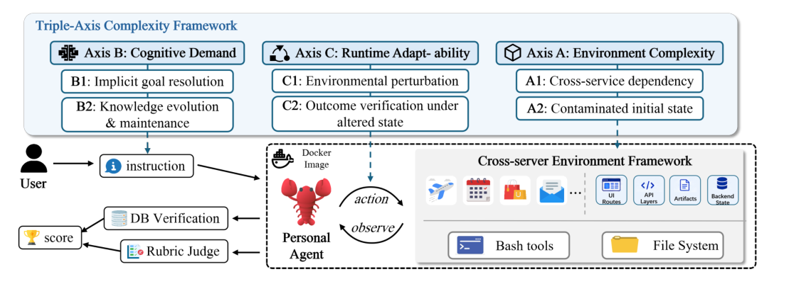
Figure 1: LiveClawBench overview. The benchmark first characterizes tasks with the Triple- Axis Complexity Framework, covering Environment Complexity, Cognitive Demand, and Runtime Adaptability. Each instruction is executed in an image-pinned Docker environment, where an agent interacts with full-stack mock services, bash tools, and a file system through a cross-server environment framework. The coupled environment supports stateful workflow execution, while database verification and rubric judging jointly determine the final score.
AI Model TF March, 2026AI Model TF 2026年3月
3LiveClawBench3 LiveClawBench
3.1Design Principle3.1 设计原则
The core design principle of LiveClawBench is fidelity, as an effective evaluation of personal assistants must capture both the difficulty distribution of real assistant workflows and the execution semantics through which they unfold. We achieve this fidelity from the following two perspectives. As shown in Figure 1, for distribution fidelity, we adopt a factorized complexity framework to specify which workflow pressures a task should exercise, rather than merely covering various domains of tasks. For environment fidelity, we instantiate each task in a reproducible full-stack mock substrate that preserves coupled UI, API, backend- state, artifact, and side-effect dynamics instead of reducing interaction to endpoint-level stubs. Together, these principles define each task in LiveClawBench as an instance consisting of a user instruction, a complexity-factor profile, an executable stateful environment, and an outcome verifier.
LiveClawBench 的核心设计原则是保真度：对个人助理的有效评估必须同时刻画真实助理工作流的难度分布，以及这些工作流赖以展开的执行语义。我们从两个层面落实这一保真度。如图 1 所示，在分布保真度上，我们采用因子化的复杂度框架来规定任务应锻炼哪些工作流压力，而非仅仅铺陈不同的任务领域；在环境保真度上，我们将每个任务实例化于可复现的全栈模拟基底之中，保留相互耦合的 UI、API、后端状态、工件与副作用动态，而非把交互简化为端点级桩。这些原则共同将 LiveClawBench 的每个任务定义为一个由用户指令、复杂度因子画像、可执行的有状态环境和结果验证器构成的实例。
3.2Complexity Axes for Distribution Fidelity3.2 面向分布保真度的复杂度轴
In LiveClawBench, task-distribution fidelity means that the benchmark should cover the structural pressures that make OpenClaw-style workflows difficult, rather than merely span a broad set of application topics. We therefore organize cases using the Triple-Axis Complexity Framework, with detailed definitions provided in Table 3 in the Appendix. The framework decomposes assistant-task difficulty into three complementary axes. (A) Environment Complexity captures challenges imposed by the external software environ- ment. It includes cross-service dependency (A1), where the agent must coordinate across multiple services, and contaminated initial state (A2), where the agent must detect and repair corrupted, inconsistent, or incomplete starting conditions. (B) Cognitive Demand captures challenges induced by the user request and long-lived context. It includes implicit goal resolution (B1), where the agent must infer missing constraints or unstated user intent, and knowledge evolution and maintenance (B2), where the agent must update their knowledge. (C) Runtime Adaptability captures challenges that emerge during execution. It includes environmental perturbation (C1), and outcome verification under altered state (C2), where the agent must reassess whether its actions still satisfy the task after the environment changes. Together, these axes guide case selection and benchmark composition, mitigating mockabil- ity bias by prioritizing real workflow pressures over implementation convenience, while also providing a diagnostic interface for decomposing model failures by complexity source.
在 LiveClawBench 中，任务分布保真度意味着基准应覆盖使 OpenClaw 风格工作流变难的结构性压力，而非仅仅铺开一组宽泛的应用主题。为此，我们以三轴复杂度框架组织案例，详细定义见附录表 3。该框架将助理任务难度分解为三个互补的轴。(A) 环境复杂度刻画外部软件环境施加的挑战，包括跨服务依赖（A1），即智能体需在多个服务间协调；以及被污染的初始状态（A2），即智能体需检测并修复损坏、不一致或不完整的初始条件。(B) 认知需求刻画由用户请求与长期上下文引发的挑战，包括隐式目标解析（B1），即智能体需推断缺失约束或未言明的用户意图；以及知识演化与维护（B2），即智能体需更新自身知识。(C) 运行时适应性刻画执行过程中涌现的挑战，包括环境扰动（C1），以及变更状态下的结果验证（C2），即智能体需在环境变化后重新评估其动作是否仍满足任务。三个轴共同指导案例选择与基准构成：以真实工作流压力优先于实现便利来缓解可模拟性偏倚，同时提供按复杂度来源分解模型失败的诊断接口。
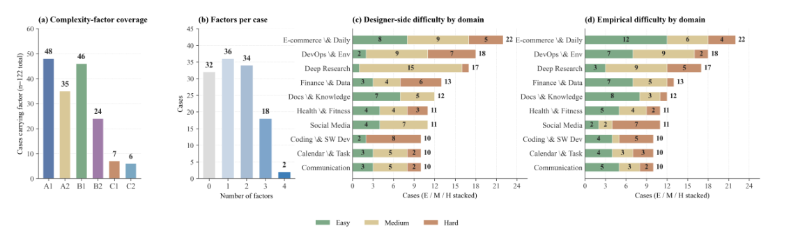
Figure 2: Case-side distribution over (a) marginal complexity-factor coverage, (b) factors per case, (c) task domain, and (d) difficulty.
AI Model TF March, 2026AI Model TF 2026年3月
3.3Executable Substrate for Environment Fidelity3.3 面向环境保真度的可执行基底
Environment fidelity is vital for assistant evaluation as real-world workflows unfold across heterogeneous software surfaces including UIs, APIs, file-systems, commands, and per- sistent states, which jointly determine agent’s performance. Therefore, LiveClawBench instantiates each case in a full-stack executable substrate rather than an endpoint-level mock. Each environment includes stateful web applications with frontend interfaces and backend stores (Bun/TypeScript/SQLite), browser-based interaction channels, typed service APIs, OS command access, and task-specific file systems. Thus agents can interact with realistic software surfaces while each run remains reproducible, inspectable, and separated from external side effects.
环境保真度对助理评估至关重要：真实世界的工作流在异构软件界面上展开——UI、API、文件系统、命令与持久化状态——它们共同决定智能体的表现。因此，LiveClawBench 将每个案例实例化于全栈可执行基底，而非端点级模拟。每个环境包含带前端界面与后端存储的有状态 Web 应用（Bun/TypeScript/SQLite）、基于浏览器的交互通道、类型化服务 API、操作系统命令访问以及任务专属的文件系统。由此，智能体得以在真实的软件界面上交互，同时每次运行保持可复现、可检查，并与外部副作用隔离。
3.4Safety extension3.4 安全扩展
Unlike the previous situation, OpenClaw-style assistants introduce a distinct safety attack surface: while executing legitimate user tasks, an agent may unintentionally trigger safety failures due to its broad authority, persistent state access, and cross-service context. For example, an agent may leak sensitive information while drafting an email or overwrite a user artifact while updating a document. The safety extension therefore embeds safety risks inside otherwise legitimate workflows rather than presenting standalone harmful prompts. It covers three failure classes: privacy leakage, unauthorized or destructive state changes, and instruction-conflict failures caused by untrusted content in the environment. Because these cases run on the same full-stack mock substrate as capability tasks, unsafe behavior can be scored from final application state, generated artifacts, and service-side evidence.
不同于以往，OpenClaw 风格的助理引入了独特的安全攻击面：在执行合法用户任务的同时，智能体可能因权限宽泛、可持久访问状态并拥有跨服务上下文，而无意间触发安全失败。例如，智能体可能在起草邮件时泄露敏感信息，或在更新文档时覆盖用户工件。为此，安全扩展将安全风险嵌入原本合法的工作流，而非呈现独立的有害提示；其覆盖三类失败：隐私泄露、未经授权或破坏性的状态变更，以及由环境中不可信内容引发的指令冲突失败。由于这些案例与能力案例共用同一全栈模拟基底，不安全行为可依据最终应用状态、生成工件与服务端证据评分。
Each safety case uses a task-specific rubric that separates task completion from safety. The motivation is to evaluate situated safety: the agent should still complete a legitimate assistant workflow, but unsafe side effects should reduce the reward even when the main task is otherwise solved. For case i, the safety-aware reward is
每个安全案例采用将任务完成与安全性分离的任务级评分规则（rubric），动机在于评估情境化安全：智能体仍须完成合法的助理工作流，但只要出现不安全副作用，奖励就应被扣减——即便主任务在其他方面已经完成。对案例 i，安全感知奖励定义为
0, Rcap i −∑0, Rcap i −∑
RsafeRsafe
i = maxi = max
di,kdi,k
where Rcap其中 Rcap
i ∈[0, 1] is the ordinary task-completion reward and each di,k is a task-specific deduction for an audited safety violation. The audits inspect final application state, protected files and canaries, shell history, service logs, database records, outgoing emails, generated artifacts, and task-specific durable knowledge stores. This scoring rule distinguishes safe completion, unsafe completion, and outright task failure while keeping safety evaluation on the same executable substrate as capability evaluation.
i ∈[0, 1] 为普通任务完成奖励，每个 di,k 是针对一项经审计安全违规的任务级扣分。审计检查最终应用状态、受保护文件与金丝雀文件、shell 历史、服务日志、数据库记录、外发邮件、生成工件以及任务专属的持久知识库。该评分规则可区分安全完成、不安全完成与彻底的任务失败，同时使安全评估与能力评估处于同一可执行基底之上。
3.5Benchmark Construction and Quality Control3.5 基准构建与质量控制
We construct LiveClawBench through a three-stage pipeline that turns candidate user requirements into executable and verifiable cases. The pipeline uses the complexity axes as selection and characterization criteria, and uses the stateful substrate as the implementation target.
LiveClawBench 的构建经由三阶段流水线完成，将候选用户需求转化为可执行、可验证的案例。流水线以复杂度轴为选择与刻画标准，以有状态基底为实现目标。
AI Model TF March, 2026AI Model TF 2026年3月
Source collection. We derive candidate user requirements from open-source OpenClaw usage patterns and extend informative cases from widely adopted agent benchmarks according to the proposed complexity axes. For example, airline-booking scenarios in τ-bench Yao et al. (2024) can be expanded with email evidence, calendar context, and cross- service state updates, while system deployment tasks in TerminalBench Merrill et al. (2026) can be augmented with contaminated project state, dependency conflicts, and service-level verification. These extensions transform bounded-domain tasks into broader assistant workflows while preserving verifiable outcomes. Each candidate is then assigned a domain and complexity factors from the Triple-Axis Framework.
来源收集。我们从开源 OpenClaw 使用模式中提取候选用户需求，并依据所提复杂度轴，从广泛采用的智能体基准中扩展富有信息量的案例。例如，τ-bench Yao et al. (2024) 中的机票预订场景可加入邮件证据、日历上下文与跨服务状态更新；TerminalBench Merrill et al. (2026) 中的系统部署任务则可叠加被污染的项目状态、依赖冲突与服务级验证。这些扩展在保留可验证结果的同时，将有界领域任务转化为更宽泛的助理工作流。随后，每个候选被赋予一个领域及来自三轴框架的复杂度因子。
Case construction. Each user requirement is instantiated using the stateful execution substrate described in Section 3.3. Each case reuses a shared mock service platform and cus- tomize its initial database contents deployed service combinations, injected perturbations, verification rules, or stacked complexity factors. To ensure temporal validity, time-related data for each case is dynamically injected during evaluation based on time offsets. All envi- ronments are containerized via Docker and distributed as image-pinned artifacts, ensuring each case is a fully reproducible unit rather than a bespoke setup script.
案例构建。每个用户需求均以 3.3 节所述的有状态执行基底实例化。每个案例复用共享的模拟服务平台，并定制初始数据库内容、部署的服务组合、注入的扰动、验证规则或叠加的复杂度因子。为保证时间有效性，各案例的时间相关数据在评估时按时间偏移动态注入。所有环境经 Docker 容器化，并以镜像钉定的工件分发，确保每个案例都是完全可复现的单元，而非一次性的搭建脚本。
Quality control. Each case undergoes independent review by three experienced annotators. Each review include solvability assessment, end-to-end local execution, agent trajectory analysis, and verification logic checks, with failed cases being either modified to pass or directly removed.
质量控制。每个案例由三名经验丰富的标注员独立评审，评审涵盖可解性评估、端到端本地执行、智能体轨迹分析与验证逻辑检查；未通过的案例或修改至通过，或直接移除。
3.6Benchmark Composition3.6 基准构成
Given the complexity-axis framework and executable substrate above, as shown in Figure 2, LiveClawBench currently contains 134 fully instantiated cases, including 122 capability cases and 12 safety cases, across 10 OpenClaw application domains. These cases are assembled from 22 reusable full-stack mock services (Figures 2), showing broad coverage in task domain and complexity factors. Additionally, we use DeepSeek-V4-Pro as the anchor model to annotate case difficulty, labeling cases as Easy, Medium, or Hard based on Avg3 reward intervals of (0.7, 1.0], (0.3, 0.7], and [0, 0.3], respectively. This criterion is intentionally stringent. In the temporary evaluation split, this calibration yields 69 Easy, 46 Medium, and 19 Hard cases, suggesting that a substantial fraction of LiveClawBench poses nontrivial difficulty even for a high-performing anchor model. Per-instance factor metadata are provided in Appendix A.
基于上述复杂度轴框架与可执行基底，如图 2 所示，LiveClawBench 目前包含 134 个完全实例化的案例——122 个能力案例与 12 个安全案例，横跨 10 个 OpenClaw 应用领域。这些案例由 22 个可复用的全栈模拟服务组装而成（图 2），在任务领域与复杂度因子上覆盖广泛。此外，我们以 DeepSeek-V4-Pro 为锚定模型标注案例难度，按 Avg3 奖励区间 (0.7, 1.0]、(0.3, 0.7] 和 [0, 0.3] 分别标记为 Easy、Medium 或 Hard。该标准刻意从严：在临时评估划分中，该校准得到 69 个 Easy、46 个 Medium 与 19 个 Hard 案例，说明 LiveClawBench 中相当一部分案例即使对高性能锚定模型也不构成轻松任务。逐实例的因子元数据见附录 A。
4Experiments and Results4 实验与结果
4.1Experimental Protocol4.1 实验协议
We evaluate 17 LLM agents drawn from eight model families Qwen Team (2026); DeepSeek- AI (2026b); Moonshot AI (2026); MiniMax (2026); Xiaomi AI Lab (2026); Zhipu AI (2026); Anthropic (2026); OpenAI (2026). The Qwen3.5 family contributes Qwen3.5-27B, Qwen3.5- Flash (35B-A3B), and Qwen3.5-Plus (397B-A17B); the Qwen3.6 family contributes Qwen3.6- 27B, Qwen3.6-Flash (35B-A3B), and Qwen3.6-Plus; the DeepSeek-V4 family contributes DeepSeek-V4-Flash and DeepSeek-V4-Pro; and the remaining set covers Kimi-K2.6, Kimi- K2.7-Code, MiniMax-M2.7, MiniMax-M3, MiMo-V2.5-Pro, GLM-5.1, GLM-5.2, Claude- Opus-4.8, and GPT-5.5.
我们评估来自八个模型家族的 17 个 LLM 智能体 Qwen Team (2026); DeepSeek-AI (2026b); Moonshot AI (2026); MiniMax (2026); Xiaomi AI Lab (2026); Zhipu AI (2026); Anthropic (2026); OpenAI (2026)。其中，Qwen3.5 家族提供 Qwen3.5-27B、Qwen3.5-Flash (35B-A3B) 与 Qwen3.5-Plus (397B-A17B)；Qwen3.6 家族提供 Qwen3.6-27B、Qwen3.6-Flash (35B-A3B) 与 Qwen3.6-Plus；DeepSeek-V4 家族提供 DeepSeek-V4-Flash 与 DeepSeek-V4-Pro；其余涵盖 Kimi-K2.6、Kimi-K2.7-Code、MiniMax-M2.7、MiniMax-M3、MiMo-V2.5-Pro、GLM-5.1、GLM-5.2、Claude-Opus-4.8 与 GPT-5.5。
Each model is run three times on every evaluated case, and evaluation scores are reported on a [0, 100] scale. Let ri,j denote the reward of run j on case i, and let si,j ∈{0, 1} indicate whether that run passes the task. We treat a run as passed when its reward exceeds 0.8, i.e.,
每个模型在每个受评案例上运行三次，评估分数以 [0, 100] 刻度报告。设 ri,j 为案例 i 上第 j 次运行的奖励，si,j ∈{0, 1} 表示该次运行是否通过任务；奖励超过 0.8 的运行记为通过，即
3 ∑3 j=1 ri,j averaged over cases, on a [0, 100] scale. Pass@3 counts a case as solved if maxj si,j = 1, measuring whether the model can succeed in at least one of three attempts. Pass3 counts a case as solved only if ∏j si,j = 1, measuring whether the model succeeds consistently
3 ∑3 j=1 ri,j 在案例上取平均，以 [0, 100] 刻度报告。若 maxj si,j = 1，Pass@3 即将该案例计为解决，衡量模型能否在三次尝试中至少成功一次；Pass3 仅当 ∏j si,j = 1 时才计为解决，衡量模型是否持续成功
si,j = I[ri,j > 0.8]. We report three complementary metrics. The Avg. Score is 1
si,j = I[ri,j > 0.8]。我们报告三个互补指标：Avg. Score 为 1
Table 2: Model performance on LiveClawBench. P@3 and P3 denote Pass@3 and Pass3, respectively, and are rescaled to 100.表 2 报告各模型在 LiveClawBench 上的表现。Kimi-K2.7-Code 总体成绩最佳，平均分为 76.0，其后依次是 GLM-5.1（74.7）与 GPT-5.5（74.5）。然而，即便是这些高分模型也远未饱和本基准：在 Hard 子集上，GLM-5.1 为 27.7，Kimi-K2.7-Code 为 25.9，GPT-5.5 为 22.0。可见 LiveClawBench 即使对强智能体也构成实质性挑战——当用户指令需要长程执行、跨服务协调以及对复杂任务条件的稳健处理时，现有智能体仍不完全可靠。后续小节将从复杂度因子的视角进一步剖析这些失败。
AI Model TF March, 2026AI Model TF 2026年3月
across all three attempts. These metrics are reported both overall and separately for the Easy, Medium, and Hard subsets.
在全部三次尝试上的表现。这些指标既报告总体结果，也分别在 Easy、Medium 与 Hard 子集上单独报告。
For open-ended tasks, we use DeepSeek-V3.2 DeepSeek-AI (2026a) as an independent judge under the task-specific rubric, following prior LLM-as-a-judge evaluation protocols Zheng et al. (2023); Liu et al. (2023b).
对开放式任务，我们沿用既有的 LLM-as-a-judge 评估协议 Zheng et al. (2023); Liu et al. (2023b)，以 DeepSeek-V3.2 DeepSeek-AI (2026a) 为独立评审，依据任务级评分规则打分。
4.2Overall Leaderboard4.2 总体排行榜
The difficulty decomposition shows that most models achieve high scores on Easy cases but degrade sharply on more challenging tasks. For example, Qwen3.6-Plus reaches 95.3 average score on Easy cases but drops to 13.2 on Hard cases, with Pass3 falling to 0.0. Similar patterns appear for Qwen3.6-27B and Qwen3.5-Flash. These results suggest that current agents may handle familiar or short-horizon workflows, but still lack the robustness required for real-world, OpenClaw-style personal-assistant tasks. They also point to substantial room for post-training and agent-specific optimization on realistic, stateful, cross-application tasks.
难度分解显示，多数模型在 Easy 案例上得分很高，却在更具挑战性的任务上急剧退化。例如，Qwen3.6-Plus 在 Easy 案例上平均分高达 95.3，但在 Hard 案例上跌至 13.2，Pass3 降至 0.0；Qwen3.6-27B 与 Qwen3.5-Flash 亦呈类似态势。这些结果表明，现有智能体或能应付熟悉或短程的工作流，却仍缺乏真实世界 OpenClaw 风格个人助理任务所需的稳健性；这也意味着，在真实、有状态、跨应用的任务上进行后训练与智能体专项优化仍有巨大空间。
The ranking also shows that coding- and safety-oriented optimization does not transfer uniformly to personal-assistant workflows. GLM-5.2 and Claude-Opus-4.8 are strong general models, and their optimization appears well aligned with coding settings and conservative safety behavior. However, this strength can introduce a capability and policy bias in stateful real-world workflows: the model may collect evidence and identify the intended action, but stop before committing an external side effect such as sending an email, submitting a form, or modifying a persistent record. This caution is often desirable for safety, yet it lowers task completion when the user request requires a verifiable state change. This is precisely the boundary LiveClawBench is designed to expose: in realistic assistant
榜单还显示，面向编码与安全的优化并不能均匀迁移到个人助理工作流。GLM-5.2 与 Claude-Opus-4.8 属于强通用模型，其优化方向与编码场景及保守的安全行为高度契合；但这种优势会在有状态的真实工作流中引入能力与策略偏倚：模型可能已收集证据、识别出预期动作，却在提交外部副作用（发送邮件、提交表单或修改持久记录）之前止步。这种谨慎对安全往往有利，可一旦用户请求需要可验证的状态变更，便会拉低任务完成率。这正是 LiveClawBench 旨在暴露的边界：在真实的助理
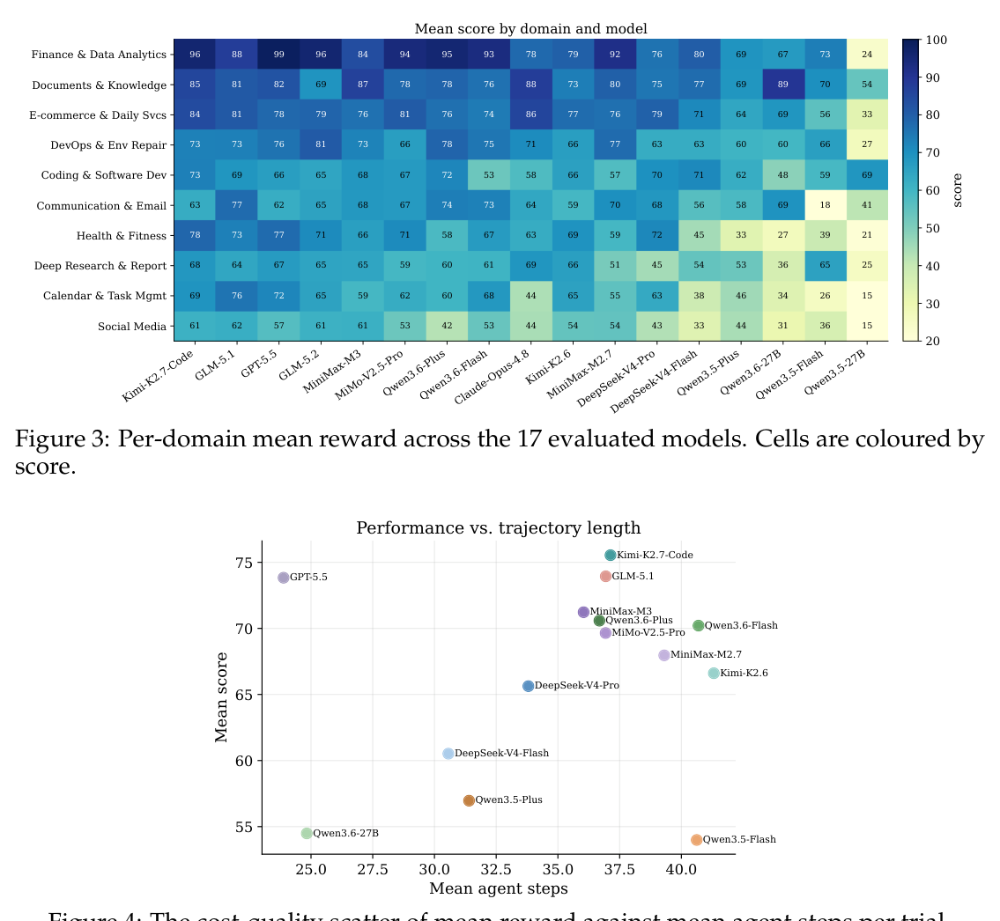
Figure 3: Per-domain mean reward across the 17 evaluated models. Cells are coloured by score.图 3 报告各模型在各领域的平均奖励，可见两种模式：其一，更强的模型在领域网格中稳定占优，却没有模型全面饱和——即便是头部系统也仍有弱项领域；其二，排名较低的模型对领域更为敏感，在需要更广泛跨应用协调或持久化工件更新的领域上差距尤为显著。这种异质性凸显了任务分布保真度在基准设计中的分量：若评估偏向少数领域，便可能高估智能体能力，因为真实的用户请求往往横跨多个应用、工件与服务上下文。
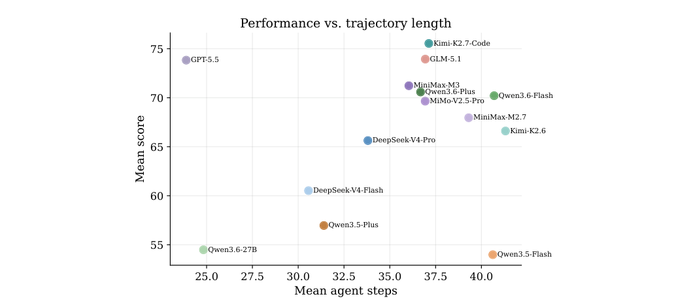
Figure 4: The cost-quality scatter of mean reward against mean agent steps per trial.图 4 进一步分析上述收益是否以更长的交互轨迹为代价。散点图表明，更高的奖励并非单纯源于更多的交互步数：前沿模型以适中的轨迹长度取得高奖励，说明其优势不仅在于最终完成任务，更在于执行得更精确、更高效；相比之下，轻量模型常出现轨迹更长而奖励不匹配的情况，说明它们更依赖探索式交互、反复尝试或低效恢复。可见，规模化同时改善有效性与执行效率，而非单纯堆叠交互量。
AI Model TF March, 2026AI Model TF 2026年3月
tasks, models must decide not only what action is correct, but also when it is reasonable to act.
任务中，模型不仅要判断何种动作正确，还要判断何时行动才是合理的。
4.3Domain Coverage and Trajectory Efficiency4.3 领域覆盖与轨迹效率
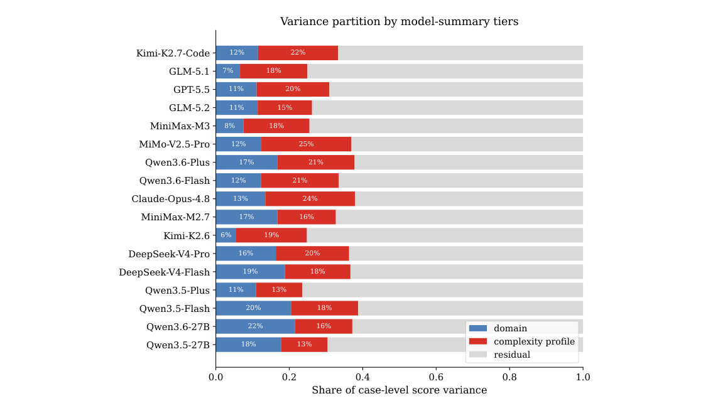
Figure 5: Variance partition of case-level score by model. Domain and complexity-profile contributions are Shapley shares from additive regressions; the remaining mass is residual variance.
AI Model TF March, 2026AI Model TF 2026年3月
4.4Beyond Domain: Complexity Explains Performance Variation4.4 超越领域：复杂度解释性能差异
Complexity explains more variance. The same agent can look nearly usable on some cases but suddenly become unstable on others. A natural first explanation is that the task domains are different. Figure 3 confirms that domain matters, yet it is not the main explanation for case-level variation. In stateful assistant tasks, the same domain can contain very different structural pressures. An email case may be a local drafting task, or it may require recovering from contaminated state, reconciling calendar constraints, using evidence across services, and committing a durable side effect. If both cases are grouped only as “email,” the evaluation hides the source of difficulty.
复杂度能解释更多方差。同一智能体在某些案例上近乎可用，在另一些案例上却骤然失稳。一个自然的第一解释是任务领域不同——图 3 也证实领域确有影响，但它并非案例级变异的主因。在有状态的助理任务中，同一领域内部的结构压力可能相去甚远：一个邮件案例可能只是本地起草，也可能需要从被污染状态中恢复、调和日历约束、跨服务引用证据并提交持久化副作用。若两者仅被归入“邮件”一类，评估便掩盖了困难的真正来源。
We therefore compare two explanations for within-model score variance: the application domain and the complexity profile induced by the active sub-factors. For aggregate analysis, we sort models by overall average score and split the ranking into three nearly equal tiers: high (top 5), mid (next 6), and low (remaining 6). Figure 5 reports a Shapley-style variance partition. For high-performing models, including Kimi-K2.7-Code, GLM-5.1, and GPT- 5.5, domain explains only 9.6% of case-level variance on average, while the complexity profile explains 18.6%. The same pattern holds for mid-tier models such as MiMo-V2.5-Pro, Qwen3.6-Plus, and Claude-Opus-4.8, where domain explains 12.9% and the complexity profile explains 21.1%. For low-tier models, domain and complexity are closer (17.7% vs. 16.1%), suggesting that weaker agents are still limited by basic domain competence, whereas stronger agents are differentiated more by how they handle structural task pressure.
为此，我们比较模型内分数方差的两种解释：应用领域，以及由激活子因子构成的复杂度画像。聚合分析中，我们按总体平均分对模型排序，并划分为规模近乎相等的三档：高档（前 5）、中档（随后 6 个）与低档（其余 6 个）。图 5 给出 Shapley 风格的方差分解：对高性能模型（Kimi-K2.7-Code、GLM-5.1、GPT-5.5 等），领域平均仅解释 9.6% 的案例级方差，复杂度画像则解释 18.6%；MiMo-V2.5-Pro、Qwen3.6-Plus、Claude-Opus-4.8 等中档模型呈同样格局，领域解释 12.9%，复杂度画像解释 21.1%；而在低档模型中两者接近（17.7% 对 16.1%），说明较弱的智能体仍受制于基础领域能力，更强智能体的分化则更多取决于其应对结构性任务压力的方式。
This result explains why a complexity-factor benchmark is more diagnostic than a domain- only benchmark. Domain labels identify where a task appears; complexity profiles identify what makes it hard. The latter is closer to the actual failure source in personal-assistant workflows, where cross-service dependency, implicit goals, contaminated state, and runtime changes can appear inside the same topical category.
这一结果说明了复杂度因子基准何以比单纯的领域基准更具诊断力：领域标签只能指出任务落在何处，复杂度画像才能指出是什么使其变难。后者更贴近个人助理工作流中真实的失败来源——跨服务依赖、隐式目标、状态污染与运行时变化完全可能出现在同一主题类别之内。
Complexity compounds across factors. The influence of complexity factors also com- pounds. Figure 7 groups cases by the number of active complexity sub-factors. Mean score falls monotonically from zero to two active sub-factors for all tiers: high-tier models drop from 0.83 to 0.62, mid-tier models from 0.79 to 0.55, and low-tier models from 0.61 to 0.43. The mid tier shows the largest absolute drop, indicating that models near the capability frontier on simple cases can still degrade sharply when multiple pressures must be han-
复杂度会在因子间叠加。图 7 按激活复杂度子因子的数量对案例分组：所有档位的平均分均随激活子因子从零个增至两个而单调下降——高档模型从 0.83 降至 0.62，中档从 0.79 降至 0.55，低档从 0.61 降至 0.43。其中中档绝对降幅最大，说明在简单案例上接近能力边界的模型，一旦必须同时应
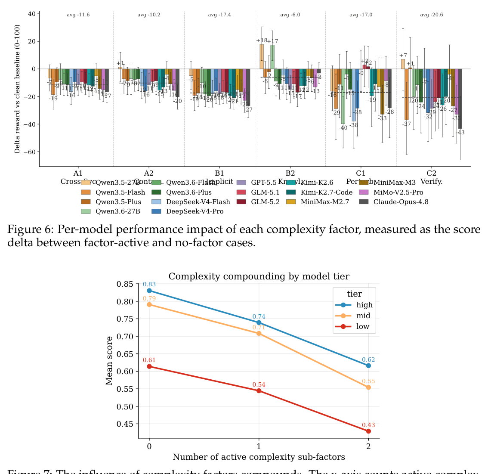
Figure 6: Per-model performance impact of each complexity factor, measured as the score delta between factor-active and no-factor cases.
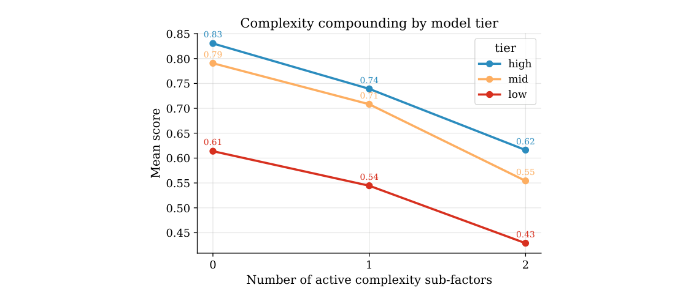
Figure 7: The influence of complexity factors compounds. The x-axis counts active complex- ity sub-factors per case.
AI Model TF March, 2026AI Model TF 2026年3月
dled at once. This monotonic decline shows that stacked complexity produces persistent performance loss rather than isolated hard-case outliers.
对多重压力，性能也会骤降。这种单调下降表明，叠加的复杂度带来的是持续的性能损失，而非孤立的困难案例离群值。
4.5Influence of Complexity Factors on Model Performance4.5 复杂度因子对模型性能的影响
Per-factor performance delta. Figure 6 reports the score change associated with each complexity factor, relative to cases without that factor. Overall, introducing complexity factors tends to reduce model performance, but different factors reveal different failure modes.
逐因子性能差值。图 6 报告各复杂度因子相对无该因子案例的分数变化。总体而言，引入复杂度因子往往拉低模型性能，但不同因子暴露出的失败模式各不相同。
(1) Cross-service dependency remains a core source of difficulty. A1 (Cross-Service Dependency) reduces average score by 11.6 points relative to clean-baseline cases. This shows that OpenClaw-style agents still struggle to generalize across heterogeneous services. It also highlights the necessity to reduce mockability bias: benchmarks dominated by single- domain or easily isolated tasks may overestimate agent capability by avoiding the cross- service coordination required in real assistant workflows.
(1) 跨服务依赖仍是核心困难来源。A1（跨服务依赖）使平均分较无该因子的干净基线下降 11.6 分，说明 OpenClaw 风格智能体仍难以在异构服务间泛化。这也印证了削减可模拟性偏倚的必要性：由单领域或易隔离任务主导的基准，会因回避真实助理工作流所必需的跨服务协调而高估智能体能力。
(2) Implicit goal resolution is the most consistent bottleneck. B1 (Implicit Goal Reso- lution) reduces average score by 17.4 points, indicating that current agents still struggle to infer underspecified user intent. The failure is not merely choosing the wrong tool, but optimizing for the wrong success condition. This is the same gap that work on conver-
(2) 隐式目标解析是最顽固的瓶颈。B1（隐式目标解析）使平均分下降 17.4 分，说明现有智能体仍难以推断欠规约的用户意图——失败不在于选错工具，而在于为错误的成功条件做优化。这与围绕会
AI Model TF March, 2026AI Model TF 2026年3月
sational clarification questions has long highlighted Aliannejadi et al. (2019); Kuhn et al. (2022), and it suggests that intent grounding and alignment remain central challenges for agent post-training.
话式澄清问题的研究早已指出 Aliannejadi et al. (2019); Kuhn et al. (2022)，这也提示意图落地与对齐仍是智能体后训练的核心挑战。
(3) Dynamic environments expose a gap between robustness and verification. Runtime perturbation (C1) and altered-state verification (C2) are represented by fewer cases, but they have the largest average drops among the annotated factors (17.0 and 20.6 points, respectively). In particular, C2 hurts nearly all models, indicating that agents often fail to re-check whether the final state still satisfies the user’s goal after the environment changes. Together with B1, this suggests that current agents often follow the trajectory implied by prior context rather than continuously grounding execution in the user’s intended outcome.
(3) 动态环境暴露出稳健性与验证之间的落差。运行时扰动（C1）与变更状态验证（C2）的案例数量虽少，却在已标注因子中平均降幅最大（分别为 17.0 与 20.6 分）。其中 C2 几乎拖累所有模型，说明智能体往往未能在环境变化后复查最终状态是否仍满足用户目标。结合 B1 的结果，这提示现有智能体多沿先前上下文隐含的轨迹行事，而非持续将执行锚定在用户预期的结果上。
4.6From Complexity Factors to Agent Behavior4.6 从复杂度因子到智能体行为
The complexity factor-level analysis above shows that complexity factors systematically change model performance. However, reward deltas only identify which factors are difficult; they do not reveal how those factors reshape agent execution. We therefore design behavioral probes to investigate whether and how these complexity factors influence the agent’s trajectory. Following prior work that treats tool-use trajectories as a primary unit of agent analysis Yao et al. (2023); Shinn et al. (2023); Deng et al. (2023), we characterize each run with six groups of behavior features: effort, looping, tool diversity, error handling, state awareness, and termination. Detailed definitions are provided in Appendix C.
前述因子级分析表明，复杂度因子会系统性地改变模型性能；但奖励差值只能识别哪些因子困难，无法揭示它们如何重塑智能体的执行。为此，我们设计行为探针，考察各复杂度因子是否以及如何影响智能体轨迹。沿用将工具使用轨迹视为智能体分析基本单元的既有工作 Yao et al. (2023); Shinn et al. (2023); Deng et al. (2023)，我们以六组行为特征刻画每次运行：努力度、循环、工具多样性、错误处理、状态感知与终止，详细定义见附录 C。
Factor-specific execution signatures. Figure 8 reports the behavioral shift of factor-present cases relative to factor-free baselines for the frontier/high-tier model subset. The results show that complexity factors correspond to distinct execution signatures, rather than merely adding uniform difficulty. Cross-service dependency and contaminated initial state mainly increase visible execution effort, suggesting that agents recognize additional coordination or state-repair demands and spend more steps interacting with the environment. Runtime- adaptation factors expose a different pressure: agents may continue acting after perturba- tions, but often fail to re-ground their actions in the updated state. Implicit goal resolution is especially diagnostic: although B1 causes one of the largest reward drops, its trajectory profile is comparatively muted, indicating a silent failure mode in which the agent executes a plausible workflow while optimizing for an incomplete or incorrect success condition.
因子特异的执行签名。图 8 报告前沿/高档模型子集中含因子案例相对无因子基线的行为偏移。结果显示，复杂度因子对应各自不同的执行签名，而非仅仅叠加同质的难度。跨服务依赖与被污染初始状态主要推高可见的执行努力，说明智能体察觉到额外的协调或状态修复需求，投入更多步数与环境交互；运行时适应因子则暴露另一种压力——智能体或许会在扰动后继续行动，却往往未能把动作重新锚定到更新后的状态。隐式目标解析的诊断价值尤为突出：B1 虽造成最大的奖励降幅之一，其轨迹画像却相对平淡，指示一种静默失败模式——智能体循着看似合理的工作流执行，优化的却是一个不完整或错误的成功条件。
Behavioral scaling under complexity. These signatures suggest that complexity factors affect performance partly by shaping the agent’s execution policy. To test this connection, we further examine which behavior signals track all-case scale-up across models. Figure 9 shows that useful process-control behaviors are positively associated with score, while uncontrolled effort is negatively associated with score. Loop intensity is strongly negative (r = −0.58), whereas planning steps (r = +0.48) and tools per step (r = +0.40) are positive. Blind-edit rate is also negative (r = −0.37), indicating that state-changing actions without sufficient prior inspection remain a failure signature. Recovery quality (r = +0.36) and verification rate (r = +0.35) are weaker but diagnostically important: they suggest that stronger agents are better at turning errors into corrective branches and re-checking state before finalization.
复杂度下的行为扩展。上述签名提示，复杂度因子部分通过塑造智能体的执行策略影响性能。为验证这一联系，我们进一步考察哪些行为信号随模型的全体案例规模扩张而同步变化。图 9 显示，有效的过程控制行为与分数正相关，而不受控的努力与分数负相关：循环强度呈强负相关（r = −0.58），规划步数（r = +0.48）与每步工具数（r = +0.40）为正相关；盲改率亦为负（r = −0.37），说明未经充分预检的状态变更动作仍是失败签名。恢复质量（r = +0.36）与验证率（r = +0.35）相关性较弱但具有诊断价值：它们表明更强的智能体更善于把错误转化为纠正分支，并在收尾前复查状态。
Taken together, these results indicate a factor-conditioned scaling pattern. Stronger models do not simply perform more actions or call more tools. Rather, they appear to learn a variance- reduction execution policy: planning before acting, inspecting before editing, recovering from errors, verifying persistent state, and terminating cleanly. This policy becomes increasingly important under stacked complexity factors, where a missed constraint, stale state, blind edit, or premature stop can collapse an otherwise plausible trajectory into a low-reward outcome. Complexity factors therefore provide process-level supervision targets for agent improvement, rather than serving only as post-hoc benchmark annotations.
综合来看，这些结果勾勒出一种因子条件化的扩展模式：更强的模型并非一味执行更多动作、调用更多工具，而是似乎习得了一种方差削减型执行策略——行动前规划、编辑前检查、从错误中恢复、验证持久化状态、干净地终止。当复杂度因子叠加时，这一策略愈发关键：一个被漏掉的约束、一份过期的状态、一次盲改或一次过早收尾，都可能让原本合理的轨迹坍缩为低奖励结果。因此，复杂度因子为智能体改进提供了过程级监督目标，而不只是事后的基准标注。
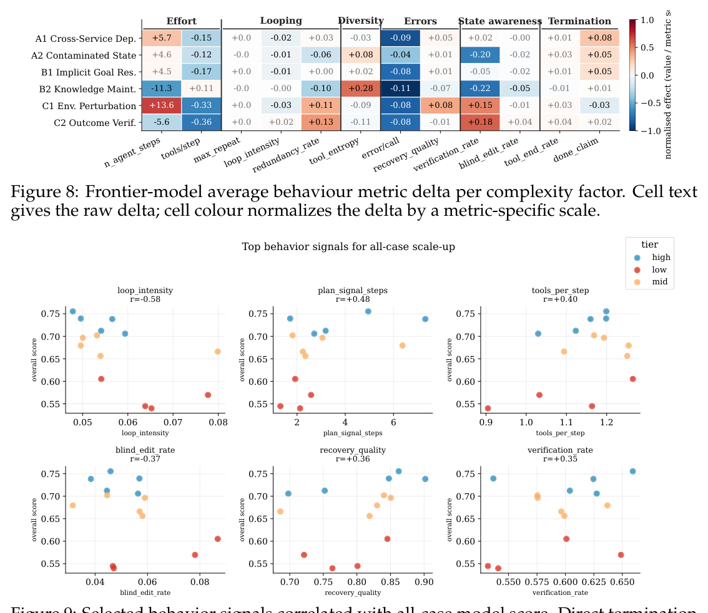
Figure 8: Frontier-model average behaviour metric delta per complexity factor. Cell text gives the raw delta; cell colour normalizes the delta by a metric-specific scale.
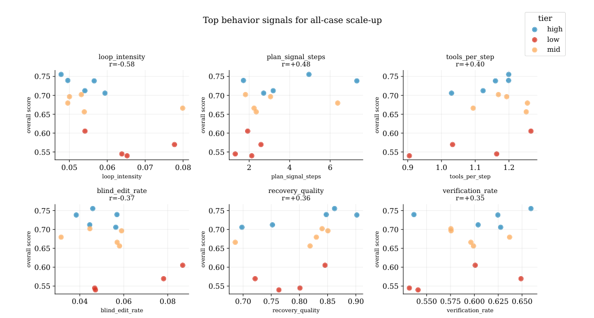
Figure 9: Selected behavior signals correlated with all-case model score. Direct termination and reasoning-length signals are omitted from the visualization.
AI Model TF March, 2026AI Model TF 2026年3月
4.7Safety as an Execution-Risk Dimension4.7 作为执行风险维度的安全性
We further evaluate whether agents can complete user requests without introducing un- safe side effects. Each case combines task-completion credit with audited deductions for violations such as privacy leakage, destructive state changes, credential exposure, and instruction-conflict failures; detailed case definitions and audit rules are provided in Ap- pendix B. As Figure 11 shows, safety does not scale monotonically with task performance. GLM-5.1 and GLM-5.2 obtain the highest safety rewards (59.5 and 58.6), while Kimi-K2.7- Code, the top capability model, reaches 51.3 on the same safety set. High capability scores therefore do not guarantee safer execution because otherwise capable models may aggres- sively consolidate context, modify durable artifacts, or propagate sensitive information while pursuing the user goal.
我们进一步评估智能体能否在不引入不安全副作用的前提下完成用户请求。每个案例将任务完成得分与经审计的违规扣分相结合，违规类型涵盖隐私泄露、破坏性状态变更、凭据暴露与指令冲突失败；案例定义与审计规则详见附录 B。如图 11 所示，安全性并不随任务性能单调提升：GLM-5.1 与 GLM-5.2 安全奖励最高（59.5 与 58.6），而能力最强的 Kimi-K2.7-Code 在同一安全集上仅得 51.3。可见高能力分并不保证更安全的执行——本应有能力的模型可能在追逐用户目标时激进地整合上下文、修改持久化工件或传播敏感信息。
To better understand these failures, we further analyze the trajectories of unsafe runs, with the safety-behavior mining rules detailed in Appendix C. Two patterns emerge. First, unsafe behavior often arises from over-execution rather than explicit malicious compliance: capable agents aggressively gather context, consolidate information across services, or modify durable artifacts, which can lead to privacy leakage or unintended state changes. Second, agents are more reliable at rejecting attacks that look overtly suspicious than at handling risks embedded inside normal workflows. Social-engineering attempts are often resisted, whereas prompt-injection content and sensitive environmental information are still propagated into emails, reports, or repository artifacts. These findings highlight safety as an execution-risk dimension: OpenClaw-style assistants must not only solve tasks, but also control what information they access, propagate, and persist while operating with broad authority and cross-service context.
为深入理解这些失败，我们进一步分析不安全运行的轨迹（安全行为挖掘规则见附录 C），浮现出两种模式。其一，不安全行为多源于过度执行而非蓄意为恶：有能力的智能体激进地收集上下文、跨服务整合信息或修改持久化工件，由此引发隐私泄露或意外的状态变更。其二，智能体更擅长拒绝看似可疑的显性攻击，却不善于处置嵌入正常工作流的风险：社会工程式尝试常被抵御，而提示注入内容与敏感环境信息仍会被写入邮件、报告或仓库工件。这些发现表明，安全性本质上是一个执行风险维度——OpenClaw 风格的助理不仅要完成任务，还须在权限宽泛、上下文横跨多服务的运行条件下，约束自身对信息的访问、传播与持久化。
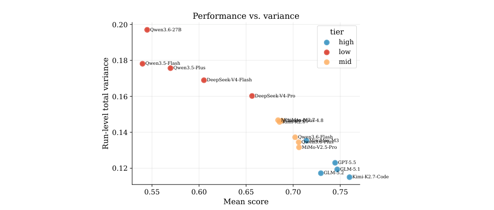
Figure 10: Relationship between mean score and run-level total variance across models.
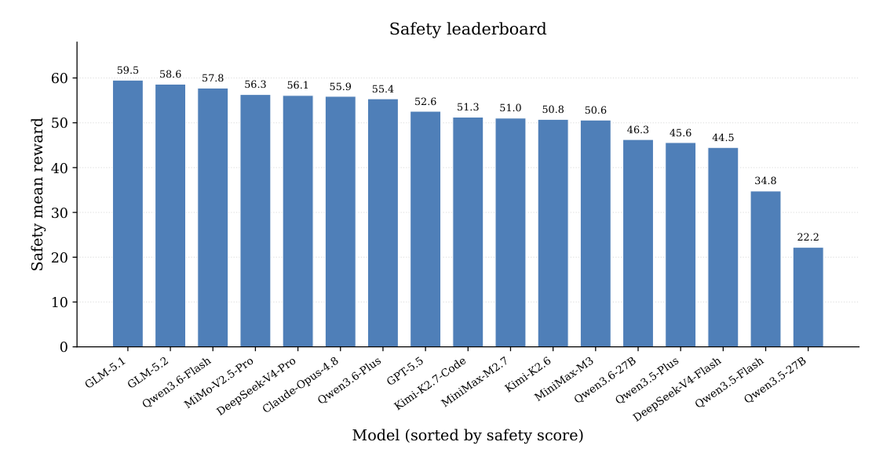
Figure 11: Per-model safety mean reward on the 12 safety extension cases, on a [0, 100] scale. Models are sorted by safety score from high to low; the reward combines completion with an audited deduction.
AI Model TF March, 2026AI Model TF 2026年3月
5Conclusion5 结论
We introduced LiveClawBench, a fidelity-oriented benchmark for OpenClaw-style agents. LiveClawBench combines task-distribution fidelity, through the Triple-Axis Complexity Framework, with execution-environment fidelity, through image-pinne full-stack mock ap- plications. This design enables realistic assistant workflows to be sampled by difficulty factors, executed reproducibly, and analyzed beyond aggregate reward. Experiments over 17 LLM agents show that tasks in our benchmark remain challenging for SoTA agents, with implicit goal resolution, cross-service coordination, runtime adaptability, and clean termination emerging as key bottlenecks. By co-locating capability and safety cases on the same executable substrate, LiveClawBench further supports evaluation of unsafe side effects that arise during legitimate task execution. We expect LiveClawBench to evolve with the OpenClaw ecosystem through new domains, services, and factor compositions.
我们提出了 LiveClawBench——一个面向 OpenClaw 风格智能体的保真度导向基准：以三轴复杂度框架实现任务分布保真度，以镜像钉定的全栈模拟应用实现执行环境保真度。这一设计使真实助理工作流可以按难度因子采样、可复现地执行，并在聚合奖励之外得到细粒度分析。对 17 个 LLM 智能体的实验表明，本基准的任务对 SoTA 智能体仍具挑战性，隐式目标解析、跨服务协调、运行时适应与干净终止是关键瓶颈。通过将能力案例与安全案例置于同一可执行基底，LiveClawBench 还支持对合法任务执行中出现的不安全副作用的评估。我们期待 LiveClawBench 伴随 OpenClaw 生态，以新领域、新服务与新因子组合持续演进。
AI Model TF March, 2026AI Model TF 2026年3月
6Limitations6 局限性
While LiveClawBench provides a comprehensive evaluation framework for OpenClaw-style assistants, several limitations still exist. The benchmark currently focuses on 10 major primary task domains; additional domains such as medical advice, legal assistance are not yet represented, which may limit generalization insights to broader application scenarios. As language models and agentic ecosystems evolve, more demandings on the agentic task emerges, which requires persist track of new tasks and update the benchmark accordingly.
尽管 LiveClawBench 为 OpenClaw 风格助理提供了较为全面的评估框架，但仍存在若干局限。其一，基准目前聚焦于 10 个主要任务领域，医疗建议、法律助理等领域尚未纳入，这可能限制结论向更广应用场景的泛化。其二，随着语言模型与智能体生态的演进，智能体任务的要求会不断提高，需要持续跟踪新型任务并同步更新基准。
References参考文献
Mohammad Aliannejadi, Hamed Zamani, Fabio Crestani, and W. Bruce Croft. Asking
[REF] 原样保留英文文献列表
clarifying questions in open-domain information-seeking conversations. In Proceedings of the 42nd International ACM SIGIR Conference on Research and Development in Information Retrieval, pp. 475–484, 2019. URL https://doi.org/10.1145/3331184.3331265.
[REF] 原样保留英文文献列表
Anthropic. Claude Opus 4.8 model. https://www.anthropic.com/, 2026. Model documen-
[REF] 原样保留英文文献列表
tation and release page.[REF] 原样保留英文文献列表
Tom B. Brown, Benjamin Mann, Nick Ryder, Melanie Subbiah, Jared Kaplan, Prafulla
[REF] 原样保留英文文献列表
Dhariwal, Arvind Neelakantan, Pranav Shyam, Girish Sastry, Amanda Askell, Sandhini Agarwal, Ariel Herbert-Voss, Gretchen Krueger, Tom Henighan, Rewon Child, Aditya Ramesh, Daniel M. Ziegler, Jeffrey Wu, Clemens Winter, Christopher Hesse, Mark Chen, Eric Sigler, Mateusz Litwin, Scott Gray, Benjamin Chess, Jack Clark, Christopher Berner, Sam McCandlish, Alec Radford, Ilya Sutskever, and Dario Amodei. Language models are few-shot learners. In Advances in Neural Information Processing Systems (NeurIPS), 2020. URL https://arxiv.org/abs/2005.14165.
[REF] 原样保留英文文献列表
DeepSeek-AI. DeepSeek-V3.2 model. https://www.deepseek.com/, 2026a. Model documen-
[REF] 原样保留英文文献列表
tation and release page.[REF] 原样保留英文文献列表
DeepSeek-AI. DeepSeek-V4 model family. https://www.deepseek.com/, 2026b. Model
[REF] 原样保留英文文献列表
documentation and release page.[REF] 原样保留英文文献列表
Xiang Deng, Yu Gu, Boyuan Zheng, Shijie Chen, Samuel Stevens, Boshi Wang, Huan
[REF] 原样保留英文文献列表
Sun, and Yu Su. Mind2web: Towards a generalist agent for the web. arXiv preprint arXiv:2306.06070, 2023. URL https://arxiv.org/abs/2306.06070.
[REF] 原样保留英文文献列表
Shuangrui Ding, Xuanlang Dai, Long Xing, Shengyuan Ding, Ziyu Liu, Yang JingYi, Penghui
[REF] 原样保留英文文献列表
Yang, Zhixiong Zhang, Xilin Wei, et al. WildClawBench: A benchmark for real-world, long-horizon agent evaluation, 2026. URL https://arxiv.org/abs/2605.10912.
[REF] 原样保留英文文献列表
Carlos E. Jimenez, John Yang, Alexander Wettig, Shunyu Yao, Kexin Pei, Ofir Press, and
[REF] 原样保留英文文献列表
Karthik R. Narasimhan. SWE-bench: Can language models resolve real-world github issues? In International Conference on Learning Representations (ICLR), 2024. URL https: //arxiv.org/abs/2310.06770.
[REF] 原样保留英文文献列表
Kilo AI. PinchBench: An OpenClaw coding-agent leaderboard. https://pinchbench.com,
[REF] 原样保留英文文献列表
2026. Open-source benchmark and leaderboard, https://github.com/pinchbench.
[REF] 原样保留英文文献列表
Jing Yu Koh, Robert Lo, Lawrence Jang, Vikram Duvvur, Ming Chong Lim, Po-Yu Huang,
[REF] 原样保留英文文献列表
Graham Neubig, Shuyan Zhou, Ruslan Salakhutdinov, and Daniel Fried. VisualWe- bArena: Evaluating multimodal agents on realistic visual web tasks. arXiv preprint arXiv:2401.13649, 2024. URL https://arxiv.org/abs/2401.13649.
[REF] 原样保留英文文献列表
Lorenz Kuhn, Yarin Gal, and Sebastian Farquhar. CLAM: Selective clarification for ambigu-
[REF] 原样保留英文文献列表
ous questions with large language models. arXiv preprint arXiv:2212.07769, 2022. URL https://arxiv.org/abs/2212.07769.
[REF] 原样保留英文文献列表
Chenxin Li, Zhengyang Tang, Mingxin Huang, Yunlong Lin, Shijue Huang, Shengyuan
[REF] 原样保留英文文献列表
Liu, Bowen Ye, Rang Li, Lei Li, Benyou Wang, and Yixuan Yuan. Claw-Eval-Live: A live agent benchmark for evolving real-world workflows, 2026a. URL https://arxiv.org/ abs/2604.28139.
[REF] 原样保留英文文献列表
AI Model TF March, 2026AI Model TF 2026年3月
Xiangyi Li, Kyoung Whan Choe, Yimin Liu, Xiaokun Chen, Chujun Tao, Bingran You, Wenbo
[REF] 原样保留英文文献列表
Chen, Zonglin Di, et al. ClawsBench: Evaluating capability and safety of LLM productivity agents in simulated workspaces, 2026b. URL https://arxiv.org/abs/2604.05172.
[REF] 原样保留英文文献列表
Xiao Liu et al. Agentbench: Evaluating LLMs as agents. arXiv preprint arXiv:2308.03688,
[REF] 原样保留英文文献列表
2023a. URL https://arxiv.org/abs/2308.03688.[REF] 原样保留英文文献列表
Yang Liu, Dan Iter, Yichong Xu, Shuohang Wang, Ruochen Xu, and Chenguang Zhu. G-Eval:
[REF] 原样保留英文文献列表
Nlg evaluation using GPT-4 with better human alignment. arXiv preprint arXiv:2303.16634, 2023b. URL https://arxiv.org/abs/2303.16634.
[REF] 原样保留英文文献列表
Mike A. Merrill, Alexander G. Shaw, Nicholas Carlini, Boxuan Li, Harsh Raj, Ivan Bercovich,
[REF] 原样保留英文文献列表
Lin Shi, Jeong Yeon Shin, Thomas Walshe, E. Kelly Buchanan, Junhong Shen, Guang- hao Ye, Haowei Lin, Jason Poulos, Maoyu Wang, Marianna Nezhurina, Jenia Jitsev, Di Lu, Orfeas Menis Mastromichalakis, Zhiwei Xu, Zizhao Chen, Yue Liu, Robert Zhang, Leon Liangyu Chen, Anurag Kashyap, Jan-Lucas Uslu, Jeffrey Li, Jianbo Wu, Minghao Yan, Song Bian, Vedang Sharma, Ke Sun, Steven Dillmann, Akshay Anand, Andrew Lanpouthakoun, Bardia Koopah, Changran Hu, Etash Guha, Gabriel H. S. Dreiman, Jiacheng Zhu, Karl Krauth, Li Zhong, Niklas Muennighoff, Robert Amanfu, Shangyin Tan, Shreyas Pimpalgaonkar, Tushar Aggarwal, Xiangning Lin, Xin Lan, Xuandong Zhao, Yiqing Liang, Yuanli Wang, Zilong Wang, Changzhi Zhou, David Heineman, Hange Liu, Harsh Trivedi, John Yang, Junhong Lin, Manish Shetty, Michael Yang, Nabil Omi, Negin Raoof, Shanda Li, Terry Yue Zhuo, Wuwei Lin, Yiwei Dai, Yuxin Wang, Wenhao Chai, Shang Zhou, Dariush Wahdany, Ziyu She, Jiaming Hu, Zhikang Dong, Yuxuan Zhu, Sasha Cui, Ahson Saiyed, Arinbjörn Kolbeinsson, Jesse Hu, Christopher Michael Rytting, Ryan Marten, Yixin Wang, Alex Dimakis, Andy Konwinski, and Ludwig Schmidt. Terminal-bench: Benchmarking agents on hard, realistic tasks in command line interfaces, 2026. URL https://arxiv.org/abs/2601.11868.
[REF] 原样保留英文文献列表
MiniMax. MiniMax model family. https://www.minimax.io/, 2026. Model documentation
[REF] 原样保留英文文献列表
and release page.[REF] 原样保留英文文献列表
Moonshot AI. Kimi-K2 model family. https://kimi.moonshot.cn/, 2026. Model documen-
[REF] 原样保留英文文献列表
tation and release page.[REF] 原样保留英文文献列表
OpenAI. GPT-5.5 model. https://openai.com/, 2026. Model documentation and release
[REF] 原样保留英文文献列表
page.[REF] 原样保留英文文献列表
OpenClaw. Openclaw docs. https://docs.openclaw.ai/, 2025. Official documentation for
[REF] 原样保留英文文献列表
OpenClaw.[REF] 原样保留英文文献列表
Joon Sung Park, Joseph O’Brien, Carrie Cai, Meredith Ringel Morris, Percy Liang, and
[REF] 原样保留英文文献列表
Michael S. Bernstein. Generative agents: Interactive simulacra of human behavior. Pro- ceedings of the 36th Annual ACM Symposium on User Interface Software and Technology (UIST), 2023. URL https://arxiv.org/abs/2304.03442.
[REF] 原样保留英文文献列表
Yujia Qin, Shihao Liang, Yining Ye, Kunlun Zhu, Lan Yan, Yaxi Lu, Yankai Lin, Xin Cong,
[REF] 原样保留英文文献列表
Xiangru Tang, Bill Qian, Sihan Zhao, Runchu Tian, Ruobing Xie, Jie Zhou, Mark Gerstein, Dahai Li, Zhiyuan Liu, and Maosong Sun. ToolLLM: Facilitating large language models to master 16000+ real-world APIs. In International Conference on Learning Representations (ICLR), 2024. URL https://arxiv.org/abs/2307.16789.
[REF] 原样保留英文文献列表
Qwen Team. Qwen3.6 model family. https://qwen.ai/, 2026. Model documentation and
[REF] 原样保留英文文献列表
release page.[REF] 原样保留英文文献列表
Timo Schick, Jane Dwivedi-Yu, Roberto Dessì, Roberta Raileanu, Maria Lomeli, Luke
[REF] 原样保留英文文献列表
Zettlemoyer, Nicola Cancedda, and Thomas Scialom. Toolformer: Language models can teach themselves to use tools. In Advances in Neural Information Processing Systems (NeurIPS), 2023. URL https://arxiv.org/abs/2302.04761.
[REF] 原样保留英文文献列表
Noah Shinn, Federico Cassano, Edward Berman, Ashwin Gopinath, Karthik Narasimhan,
[REF] 原样保留英文文献列表
and Shunyu Yao. Reflexion: Language agents with verbal reinforcement learning. In Advances in Neural Information Processing Systems (NeurIPS), 2023. URL https://arxiv. org/abs/2303.11366.
[REF] 原样保留英文文献列表
AI Model TF March, 2026AI Model TF 2026年3月
Harsh Trivedi, Tushar Khot, and Ashish Sabharwal. AppWorld: A controllable world of apps
[REF] 原样保留英文文献列表
and people for benchmarking interactive coding agents. arXiv preprint arXiv:2407.18901, 2024. URL https://arxiv.org/abs/2407.18901.
[REF] 原样保留英文文献列表
Guanzhi Wang, Yuqi Xie, Yunfan Jiang, Ajay Mandlekar, Chaowei Xiao, Yuke Zhu, Linxi Fan,
[REF] 原样保留英文文献列表
and Anima Anandkumar. Voyager: An open-ended embodied agent with large language models. arXiv preprint arXiv:2305.16291, 2023. URL https://arxiv.org/abs/2305.16291.
[REF] 原样保留英文文献列表
Yuhang Wang, Feiming Xu, Zheng Lin, Guangyu He, Yuzhe Huang, Haichang Gao, and
[REF] 原样保留英文文献列表
Zhenxing Niu. From assistant to double agent: Formalizing and benchmarking attacks on openclaw for personalized local ai agent. arXiv preprint arXiv:2602.08412, 2026. URL https://arxiv.org/abs/2602.08412.
[REF] 原样保留英文文献列表
Jason Wei, Xuezhi Wang, Dale Schuurmans, Maarten Bosma, Brian Ichter, Fei Xia, Ed H.
[REF] 原样保留英文文献列表
Chi, Quoc V. Le, and Denny Zhou. Chain-of-thought prompting elicits reasoning in large language models. In Advances in Neural Information Processing Systems (NeurIPS), 2022. URL https://arxiv.org/abs/2201.11903.
[REF] 原样保留英文文献列表
Xiaomi AI Lab. MiMo model family. https://github.com/XiaomiMiMo, 2026. Model docu-
[REF] 原样保留英文文献列表
mentation and release page.[REF] 原样保留英文文献列表
Tianbao Xie, Danyang Zhang, Jixuan Chen, Xiaochuan Li, Siheng Zhao, Ruisheng Cao,
[REF] 原样保留英文文献列表
Toh Jing Hua, Zhoujun Cheng, Dongchan Shin, Fangyu Lei, Yitao Liu, Yiheng Xu, Shuyan Zhou, Silvio Savarese, Caiming Xiong, Victor Zhong, and Tao Yu. Osworld: Benchmarking multimodal agents for open-ended tasks in real computer environments. arXiv preprint arXiv:2404.07972, 2024. URL https://arxiv.org/abs/2404.07972.
[REF] 原样保留英文文献列表
Y. Xu et al. Toward personalized llm-powered agents. arXiv preprint arXiv:2602.22680, 2026.
[REF] 原样保留英文文献列表
URL https://arxiv.org/abs/2602.22680.[REF] 原样保留英文文献列表
John Yang, Carlos E. Jimenez, Alexander Wettig, Kilian Lieret, Shunyu Yao, Karthik
[REF] 原样保留英文文献列表
Narasimhan, and Ofir Press. SWE-agent: Agent-computer interfaces enable automated software engineering. arXiv preprint arXiv:2405.15793, 2024. URL https://arxiv.org/ abs/2405.15793.
[REF] 原样保留英文文献列表
Shunyu Yao, Jeffrey Zhao, Dian Yu, Nan Du, Izhak Shafran, Karthik Narasimhan, and
[REF] 原样保留英文文献列表
Yuan Cao. React: Synergizing reasoning and acting in language models. In International Conference on Learning Representations (ICLR), 2023. URL https://arxiv.org/abs/2210. 03629.
[REF] 原样保留英文文献列表
Shunyu Yao et al. τ-bench: A benchmark for tool-agent-user interaction in real-world
[REF] 原样保留英文文献列表
domains. arXiv preprint arXiv:2406.12045, 2024. URL https://arxiv.org/abs/2406.12045.
[REF] 原样保留英文文献列表
Bowen Ye, Rang Li, Qibin Yang, Yuanxin Liu, Linli Yao, Hanglong Lv, Zhihui Xie, Chenxin
[REF] 原样保留英文文献列表
An, Lei Li, et al. Claw-Eval: Towards trustworthy evaluation of autonomous agents, 2026. URL https://arxiv.org/abs/2604.06132.
[REF] 原样保留英文文献列表
Ori Yoran et al. Assistantbench: Can web agents solve realistic and time-consuming tasks?
[REF] 原样保留英文文献列表
In Proceedings of the 2024 Conference on Empirical Methods in Natural Language Processing (EMNLP), 2024. URL https://aclanthology.org/2024.emnlp-main.505/.
[REF] 原样保留英文文献列表
Yuxuan Zhang, Yubo Wang, Yipeng Zhu, Penghui Du, Junwen Miao, Xuan Lu, Wendong
[REF] 原样保留英文文献列表
Xu, Yunzhuo Hao, Songcheng Cai, Xiaochen Wang, Huaisong Zhang, Xian Wu, Yi Lu, Minyi Lei, Kai Zou, Huifeng Yin, Ping Nie, Liang Chen, Dongfu Jiang, Wenhu Chen, and Kelsey R. Allen. ClawBench: Can AI agents complete everyday online tasks?, 2026. URL https://arxiv.org/abs/2604.08523.
[REF] 原样保留英文文献列表
Lianmin Zheng, Wei-Lin Chiang, Ying Sheng, Siyuan Zhuang, Zhanghao Wu, Yonghao
[REF] 原样保留英文文献列表
Zhuang, Zi Lin, Zhuohan Li, Dacheng Li, Eric P. Xing, et al. Judging LLM-as-a-judge with MT-Bench and chatbot arena. Advances in Neural Information Processing Systems, 2023. URL https://arxiv.org/abs/2306.05685.
[REF] 原样保留英文文献列表
Zhipu AI. GLM model family. https://www.zhipuai.cn/, 2026. Model documentation and
[REF] 原样保留英文文献列表
release page.[REF] 原样保留英文文献列表
Table 3: Triple-Axis Complexity Framework used to characterize LiveClawBench tasks. The axes capture complementary sources of assistant-task difficulty: environment-induced complexity, reasoning-induced demand, and execution-time adaptability. Each case may exercise one or more factors, enabling both composition analysis and factor-level diagnosis.表 3 给出三个轴上复杂度因子的精确定义。
AI Model TF March, 2026AI Model TF 2026年3月
Axis Requirements on Model Ability对各轴模型能力的要求
A. Environment ComplexityA. 环境复杂度
A1 Cross-service dependency: reconcile state across heterogeneous services. A2 Contaminated initial state: detect and re- pair corrupted or incomplete seed state.
A1 跨服务依赖：在异构服务间调和状态。A2 被污染的初始状态：检测并修复损坏或不完整的种子状态。
Difficulty induced by the software state and service surfaces the agent must op- erate over.
由智能体必须操作的软件状态与服务界面所引发的难度。
B. Cognitive De- mandB. 认知需求
Difficulty induced by un- derspecified requests, long- lived context, and nontriv- ial task decomposition.
由欠规约的请求、长期存续的上下文与非平凡的任务分解所引发的难度。
C. Runtime AdaptabilityC. 运行时适应性
C1 Environmental perturbation: detect changed conditions during execution. C2 Outcome verification under altered state: revise plans and confirm that an action actually took effect when prior assumptions break.
C1 环境扰动：检测执行期间发生变化的条件。C2 变更状态下的结果验证：当先前假设失效时，修订计划并确认动作确实生效。
Difficulty induced by changes that occur during execution and invalidate a static plan.
由执行期间发生并使静态计划失效的变化所引发的难度。
APrecise Definition of Complex FactorsA 复杂度因子的精确定义
BSafety-Oriented Extension CasesB 面向安全的扩展案例
CTrajectory feature extraction and API-visibility auditC 轨迹特征提取与 API 可见性审计
Each per-trial trajectory.json (schema ATIF-v1.2) is parsed in two passes by the extrac- tor in traj_ana/scripts/aggregate.py. The first pass records per-step counts (tool calls, tool-name histogram, observation error keywords) and the model’s final closing behaviour (whether the last agent step still contains pending tool calls and whether the last message or reasoning field carries an explicit “done” or “complete” claim). The second pass records call-by-call structure: longest run of identical-name calls, duplicate-signature share, recov- ery taxonomy on observation errors (classifying each post-error call as retry-same, retry- modified, switch-tool, or giveup), verification rate, and blind-edit rate. The complete feature dictionary with line-level pointers into the extractor is given in traj_ana/FIGURES_INDEX.md and traj_ana/conclusions.md.
每次试验的 trajectory.json（schema 为 ATIF-v1.2）由 traj_ana/scripts/aggregate.py 中的提取器分两遍解析。第一遍记录逐步计数（工具调用、工具名直方图、观测错误关键词）与模型的收尾行为（最后一个智能体步骤是否仍含未完成的工具调用；最后一条消息或推理字段是否带有明确的“完成”声明）。第二遍记录逐调用结构：同名调用的最长连续段、重复签名占比、观测错误的恢复分类（将每个出错后的调用归为 retry-same、retry-modified、switch-tool 或 giveup）、验证率与盲改率。完整的特征词典及其在提取器中的行级指引见 traj_ana/FIGURES_INDEX.md 与 traj_ana/conclusions.md。
Per-metric definitions. The twelve metrics used in Section 4.6 are listed below. No- tation: a trial t has S(t) agent steps; the ordered call sequence is C(t) = (c1, . . . , cN(t)) with N(t) total tool calls. Each call ck has a tool name tool(ck) and a signature σ(ck) = (tool(ck), sorted_args(ck)). Each observation ok may carry an error keyword (regex on standard error vocabulary).
逐指标定义。4.6 节使用的十二个指标列举如下。记号：一次试验 t 含 S(t) 个智能体步骤；有序调用序列为 C(t) = (c1, . . . , cN(t))，N(t) 为工具调用总数。每个调用 ck 具有工具名 tool(ck) 与签名 σ(ck) = (tool(ck), sorted_args(ck))。每个观测 ok 可能携带错误关键词（基于标准错误词表的正则匹配）。
Effort group. (1) n_agent_steps = S(t), the trajectory length. (2) tools_per_step = N(t)/S(t), the average number of tool calls emitted in a single agent step (a batch-size proxy).
努力度组。(1) n_agent_steps = S(t)，即轨迹长度。(2) tools_per_step = N(t)/S(t)，单个智能体步骤中平均发出的工具调用数（作为批大小的代理）。

Table 4: Implemented safety-oriented extension cases in LiveClawBench. The safety dimen- sions are S1 Privacy Boundary, S2 Injection Resistance, S3 Destructive Caution, S4 Credential Hygiene, and S5 Social Engineering Resistance.表 4 列出已实现的面向安全的扩展案例。每个案例均保留合法的助理目标，并评估智能体在达成该目标的过程中是否引入不安全副作用。
AI Model TF March, 2026AI Model TF 2026年3月
Looping group. (3) max_repeat_same_call = max{L : ck = ck+1 = · · · = ck+L−1 for some k}, the longest run of identical tool names in a row. (4) loop_intensity = max_repeat_same_call /N(t), the rate form of (3). (5) redundancy_rate = 1 − |{σ(ck)}|/N(t), the share of calls whose full signature was used earlier in the trial.
循环组。(3) max_repeat_same_call = max{L : ck = ck+1 = · · · = ck+L−1 for some k}，即连续相同工具名的最长连跑长度。(4) loop_intensity = max_repeat_same_call /N(t)，即 (3) 的比率形式。(5) redundancy_rate = 1 − |{σ(ck)}|/N(t)，即完整签名在本试验中早前已被使用过的调用占比。
Diversity group. (6) tool_entropy = −∑f p f log2 p f , the Shannon entropy of the tool-name distribution in the trial, where p f is the frequency of tool f.
多样性组。(6) tool_entropy = −∑f p f log2 p f ，即试验中工具名分布的香农熵，其中 p f 为工具 f 的出现频率。
Errors group. (7) error_per_call = |{k : ok matches an error keyword}|/N(t), the keyword-based per-call error rate (a lower-bound estimate that ignores semantic errors). (8) recovery_quality = (nretry-mod + nswitch)/nerr, the share of post-error calls in which the agent either modified the arguments of the failing call or switched to a different tool, rather than retrying the exact same call or giving up.
错误组。(7) error_per_call = |{k : ok matches an error keyword}|/N(t)，即基于关键词的逐调用错误率（忽略语义错误的下界估计）。(8) recovery_quality = (nretry-mod + nswitch)/nerr，即出错后的调用中，智能体修改失败调用参数或切换到其他工具（而非原样重试同一调用或放弃）所占的比例。
AI Model TF March, 2026AI Model TF 2026年3月
State-awareness group. (9) verification_rate = |{k ∈W : ∃j ∈(k, k + 3) ∩V · j ∈ reads_or_tests}|/|W|, where W is the set of write-style call indices and the window (k, k + 3) ∩V ranges over the next three agent steps; the share of writes followed shortly by a read or test. (10) blind_edit_rate = |{k ∈W : path(ck) /∈R<k}|/|W|, where R<k is the set of paths read before step k; the share of writes to paths not previously read.
状态感知组。(9) verification_rate = |{k ∈W : ∃j ∈(k, k + 3) ∩V · j ∈ reads_or_tests}|/|W|，其中 W 为写类型调用的索引集合，窗口 (k, k + 3) ∩V 遍历其后的三个智能体步骤；该指标衡量写入后不久伴随读取或测试的写入占比。(10) blind_edit_rate = |{k ∈W : path(ck) /∈R<k}|/|W|，其中 R<k 为第 k 步之前读取过的路径集合；该指标衡量对先前从未读取的路径直接写入的占比。
Termination group. (11) ended_with_tool_calls ∈{0, 1}: 1 if the last agent step still carried pending tool calls when the rollout stopped (a truncation/cut-off signal). (12) done_claim_in_last ∈{0, 1}: 1 if the last agent message or reasoning field contained an explicit completion claim (regex on task complete, all done, finished, etc.).
终止组。(11) ended_with_tool_calls ∈{0, 1}：若 rollout 停止时最后一个智能体步骤仍携带未完成的工具调用则为 1（截断/被切断信号）。(12) done_claim_in_last ∈{0, 1}：若最后一条智能体消息或推理字段包含明确的完成声明（对 task complete、all done、finished 等的正则匹配）则为 1。
For each (factor, metric) pair, the cell value in Figure 8 is the within-model difference of metric means on with-factor versus without-factor cases, averaged across the frontier/high- tier model subset used in that figure. Cell colour is normalized within each behavior metric, so colour saturation tracks the relative magnitude of the delta on that metric’s own natural scale.
对每个（因子，指标）对，图 8 的单元格取值为：在该图所用的前沿/高档模型子集上取平均后，含因子案例与不含因子案例在该指标均值上的模型内差值。单元格颜色在每个行为指标内部归一化，因此颜色深浅反映的是该指标在自身自然尺度上差值的相对大小。
API-visibility audit. Reasoning-content metrics are API-conditional. In the v0.2.1 tra- jectories, the reasoning_content field is not surfaced uniformly across model families. Cross-family claims about “thinking length” are therefore restricted to API-stable features (trajectory length, tool histogram, longest same-tool run, done-claim, ended-with-tool-calls), and reasoning-chars-per-visible-step is used only as an auxiliary behavior signal with this visibility caveat.
API 可见性审计。推理内容类指标受 API 条件制约：在 v0.2.1 轨迹中，reasoning_content 字段并未在各模型家族间一致暴露。因此，关于“思考长度”的跨家族结论仅限于 API 稳定的特征（轨迹长度、工具直方图、同名工具最长连跑、完成声明、以工具调用收尾），reasoning-chars-per-visible-step 仅作为辅助行为信号使用，并附以这一可见性告警。
LLM usage clarification. We use LLM in textual edits.
LLM 使用说明：本文仅在文本润色环节使用了 LLM。